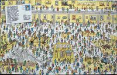

Escuela para Genios del Mal
 De: La Frikipedia, la enciclopedia extremadamente seria.
De: La Frikipedia, la enciclopedia extremadamente seria.
| De la serie Lugares y sitios:
|
| Escuela para Genios del Mal
|
| 
|
| Aló, si, ¿como que no tenmos plata?, aló, esto esta prendido,¿y lo anotan, pero por la %$&#%$
|
|
| Sector de actividad
|
Nada solo flojos vagos
|
| Público objetivo
|
Ninguno nada mas que hacer mal
|
| Localizado en
|
Ya te dike
|
| Regentado por
|
Tu
|
| Nombres típicos
|
Esa wea inutil de ahi.
|
| Decoración habitual
|
Ninguna, son tan pobres que ni las gracias dan.
|
| Actividades comunes
|
Pedir limosna
|
| ¿Es rentable?
|
No
|
| Nunca verás aquí...
|
Algo bueno y productivo
|
| Nivel de frikismo
|
A que va eso.
|
Escuela por la que han desfilado los personajes más perversos de la historia, de hecho, varios de los presidentes del mundo se graduaron allí.
Historia
Fue fundada por el Doctor Maligno (o Doctor Malito, como le dicen muchos), quien consideraba que la Universidad del Mal impartía demasiados conocimientos teóricos que luego ningún Genio del Mal iba a necesitar en su carrera laboral; e Isabel Salinero (la genio maligno) quien proponia no enseñar nada y ser un genio del mal suspendiendo a sus alumnos. Por esto, decidieron crear una Escuela de Formación Profesional donde se impartieran únicamente las materias realmente necesarias para dominar el mundo, y desde un enfoque práctico.
Miembro fundador de la misma
Carreras malignas
En la escuelas para genios del mal no solo puedes ser un perfecto genio del mal, sino también obtener un Master, Doctorado, etc. en:
- Malevologia
- Leyes del mal
- Ingeniería maligna
- Malignotologia (no es lo mismo que malevologia)
- Todas las ramas de la medicina maligna como cardeologia maligna, neurologia maligana y ginecologia maligna
- Arquitectura y decoración maligna (perfecta para construir guaridas del mal)
etc
Manual del perfecto Tirano
Clase impartida por el Doctor Maligno, leyendo de un libro de un genio del mal tan bueno que nadie supo quién es y domina el mundo desde las sombras dirigiendo a Los Patriots, así que como lo leía sin pensar, fué derrotado por Austin Powers.
- Mis Legiones del Terror tendrán cascos con visores de plexiglás transparente, no con visores que tapen la cara.
- Mis conductos de ventilación serán demasiado pequeños para gatear por ellos.
- Mi noble medio-hermano cuyo trono usurpé debe ser asesinado, no encarcelado secretamente en una celda olvidada de mis calabozos.
- Dispararles no debe ser suficiente para mis enemigos.
- El Artefacto Que Es La Fuente De Mi Poder no será guardado en la Montaña De La Desesperación Mas Allá Del Río De Fuego Guardado Por Los Dragones De La Eternidad. Estará en mi depósito de seguridad. Lo mismo es aplicable al Objeto Que Es Mi Única Debilidad.
- No me recrearé en el sufrimiento de mi enemigo antes de matarle.
- Cuando haya capturado a mi adversario y él diga antes de matarme, ¿podrías decirme al menos que es todo esto? yo diré NO y le dispararé..., no, pensándolo mejor le dispararé y entonces diré NO.
- Después de raptar a la bella princesa, nos casaremos inmediatamente en una modesta ceremonia civil. No con un espectáculo sorprendente de tres semanas, tiempo en el cual la fase final de mi plan será desbaratada. O mejor aun, simplemente la violo todas las veces que quiera hasta cansarme de ella, la mate y diga que se la comio mi perro junto a mi tarea.
- No incluiré un mecanismo de autodestrucción a no ser que sea absolutamente necesario. Si es necesario, no será un gran botón rojo con una etiqueta que diga Peligro: No Pulsar. El gran botón rojo, sin embargo, disparará una ráfaga de balas sobre cualquiera lo bastante estúpido para usarlo. De igual forma, el botón ON/OFF no estará claramente marcado como tal.
- No interrogaré a mis enemigos en el Santuario Interior; un pequeño hotel alejado de mis fronteras funcionará igual de bien.
- Estaré seguro de mi superioridad. Luego no sentiré ninguna necesidad de probarla dejando pistas en forma de acertijos o dejando vivos a mis enemigos más débiles para demostrarles que no suponen una amenaza.
- Uno de mis consejeros será un niño normal de 5 años. Cualquier fallo en mi plan que sea capaz de detectar será corregido antes de ser llevado a cabo.
- Todos los enemigos asesinados serán incinerados, o al menos tendrán una cantidad de balas en el cuerpo equivalente a su propio peso, no serán dejados para que mueran en el fondo de un precipicio. El anuncio de sus muertes, así como cualquier celebración, será aplazado hasta después de que se haya llevado a cabo la disposición nombrada.
- El héroe no tendrá derecho a un último beso, último cigarrillo, o cualquier otra forma de última voluntad. De todos modos, puede preguntársele si quiere algo de eso. Cuando diga lo que quiere, le soltaré una buena torta y le diré que no.
- Nunca emplearé un dispositivo digital de cuenta atrás. Si encuentro que es absolutamente inevitable, lo programaré para activarse cuando llegue a 117, justamente cuando el héroe esté poniendo su plan en marcha.
- Nunca usaré la frase pero antes de matarte, hay una sola cosa que quiero saber. Si de verdad quiero saber algo de él, utilizaré un lector de mentes.
- Cuando tenga consejeros, escucharé sus consejos de vez en cuando.
- No tendré un hijo. Aunque su irrisoriamente mal planeado intento de usurpar mi poder fallara fácilmente, podría proveer una distracción fatal en un momento crucial.
- No tendré una hija. Ella sería tan bella como malvada, pero una mirada al robusto aspecto del héroe y ella traicionará a su propio padre.
- A pesar de su probado efecto anti-stress, no caeré en las carcajadas típicas de maníacos. Cuando estés ocupado en eso es demasiado fácil no darse cuenta de desarrollos no esperados que un individuo más atento podría percibir.
- Contrataré un diseñador con talento para crear uniformes originales para mis Legiones del Terror, no usaré baratos uniformes de rebajas que les hagan parecer tropas nazis, soldados romanos, o salvajes hordas mongoles. Todos fueron derrotados al final y yo quiero que mis tropas tengan una disposición más positiva.
- No importa lo tentado que esté con la posibilidad del poder ilimitado, nunca consumiré un campo de energía mayor que mi cabeza.
- Guardaré una reserva de armas de baja tecnología y entrenaré a mis tropas para su uso. De esta forma, incluso si los héroes consiguen neutralizar El Artefacto Que Es La Fuente De Mi Poder y/o dejar inútiles las armas normales de energía, mis tropas no serán superadas por un puñado de salvajes armados con rocas y lanzas.
- Mantendré un conocimiento realista de mis fuerzas y debilidades. Aunque esto elimina parte de la diversión del trabajo, al menos nunca diré la frase ¡¡¡No, esto no puede ocurrir, soy INVENCIBLE!!! (después de lo cual la muerte es casi instantánea).
- No importa lo bien que funcione, nunca construiré ninguna clase de maquinaria que sea completamente indestructible salvo por un pequeño y virtualmente inaccesible punto vulnerable. En todo caso, más sensato sería construir una máquina COMPLETAMENTE INVENCIBLE, pero eso lo dejaré como un posible.
- No importa lo atractivos que ciertos miembros de la rebelión sean, probablemente hay alguien igual de atractivo que no esté desesperado por matarme. Desde luego, me lo pensaré dos veces antes de ordenar que un prisionero sea enviado a mi dormitorio.
- Nunca construiré un sólo ejemplar de Cualquier Cosa Importante. Todos los sistemas tendrán paneles y baterías redundantes. Por la misma razón, siempre llevaré al menos dos armas completamente cargadas en todo momento.
- Mi monstruo mascota estará guardado en una prisión segura de la cual no pueda escapar y en la cual yo no pueda caer accidentalmente.
- Vestiré con ropas de colores brillantes y alegres, para sorprender a mis enemigos.
- Todos los conjuradores divagantes, terratenientes torpes, bardos sin talento y ladrones cobardes serán ejecutados de forma preventiva. Mis enemigos seguramente abandonarán su búsqueda si no tienen ninguna fuente de alivio cómico.
- Todas las taberneras inocentes y atractivas de mi reino serán reemplazadas por camareras malhumoradas y hartas del mundo que no proporcionarán refuerzos inesperados y subargumentos románticos al héroe o a su compañero.
- No me enfureceré y mataré al mensajero que traiga malas noticias sólo para demostrar lo malísimo que soy. Los buenos mensajeros son difíciles de encontrar.
- No requeriré a los altos mandos femeninos de mi organización que lleven bustiers de acero inoxidable. La moral mejora con una forma de vestir más sencilla. De la misma forma, los trajes de cuero negro serán reservados para ocasiones formales.
- No me transformaré en una serpiente, nunca ayuda. Si es para escapar, me teletransportaré.
- No me dejaré perilla. En los días antiguos te daba un aspecto diabólico. Ahora solo te hace parecer un miembro resentido de la Generación X.
- No encerraré miembros del mismo grupo rebelde en el mismo bloque de celdas, y menos en la misma celda. Si son prisioneros importantes, yo mismo conservaría la única llave de la celda en lugar de repartir copias a todos los guardias inútiles de la prisión.
- Si mi Hombre De Confianza me dice que mis Legiones del Terror están perdiendo la batalla, le creeré. Después de todo es mi Hombre De Confianza.
- Si el enemigo que acabo de matar tiene un hermano menor o un hijo en algún lugar, lo encontraré y lo mataré inmediatamente, en lugar de esperar que crezca abrigando sentimientos de venganza contra mí cuando me encuentre en mi vejez.
- Si debo entrar en batalla, no lo haré al frente de mis Legiones del Terror, ni buscaré a mi contrario entre su ejército.
- Nunca seré caballeroso ni deportivo. Si tengo un Superarma Imparable, la usaré tan pronto y tan a menudo como sea posible en lugar de reservarla.
- Una vez que mi poder esté asegurado, destruiré todos esos malditos Dispositivos De Viaje En El Tiempo. Mientras, los acapararé y los usaré para corregir algún error que cometa.
- No llamaré a mi Arma Imparable utilizando un sufijo (tipo "Lanzarrayotron") o un número de forma repetitiva. Es más aconsejable utilizar clase, letra, número y modelo: "Rayo M234-B"
- Cuando capture al héroe, me aseguraré de capturar también a su perro, mono, hurón o cualquier animal asquerosamente listo capaz de roer cuerdas y coger llaves.
- Mantendré una saludable cantidad de escepticismo cuando capture a la bella rebelde y ella me diga que le atrae mi poder y mi físico y que traicionará gustosamente a sus compañeros si le dejo participar en mis planes.
- Sólo contrataré cazarrecompensas que trabajen únicamente por el dinero. Aquellos que trabajan por el placer de la caza tienden a hacer cosas tan estúpidas como conceder al otro una deportiva posibilidad de ganar.
- Me aseguraré de que las responsabilidades estén perfectamente definidas en mi organización. Por ejemplo, si mi general la fastidia no sacaré mi pistola y le diré: Y éste es el precio del fracaso dándome entonces la vuelta y matando a un subordinado cualquiera.
- Si un consejero me dice Mi señor, es sólo un hombre, ¿qué puede hacer un sólo hombre? Yo responderé Ésto y mataré al consejero.
- Si advierto que un jovenzuelo ha empezado una aventura para destruirme, le mataré mientras sea un jovenzuelo, en lugar de esperar a que madure.
- Trataré a cualquier bestia que controle mediante magia o tecnología con respeto y amabilidad. De tal forma que si el control es roto, no venga inmediatamente a vengarse de mí.
- Si descubro la localización del Artefacto Que Puede Destruirme, no enviaré a todas mis tropas a apropiarse de él. Las enviaré a apropiarse de cualquier otra cosa y pondré un anuncio de "se busca" en el periódico local.
- Mis ordenadores principales tendrán su propio sistema operativo, que será totalmente incompatible con el estándar de los portátiles de IBM y MAC.
- Si uno de los guardias de mis calabozos empieza a expresar preocupación por las condiciones de la celda de la Bella Princesa, le transferiré inmediatamente a una posición menos orientada al público.
- Contrataré a un equipo cualificado de arquitectos para que examinen mi castillo y me informen de todos los pasajes secretos y túneles abandonados que yo deba conocer.
- Si la Bella Princesa que capture dice ¡Yo nunca me casaré contigo! ¡Nunca! ¿Me escuchas? ¡¡¡NUNCA!!! yo diré Vaaale y la mataré.
- Nunca cerraré un trato con un ser demoníaco para luego intentar engañarle simplemente por llevar la contraria.
- Los mutantes deformes y los bichos raros psicópatas tendrán su lugar en mis Legiones del Terror. Sin embargo antes de enviarles en importantes misiones secretas que requieran tacto y sutileza, buscaré alguien igualmente cualificado que llame menos la atención.
- Mis Legiones del Terror serán entrenadas para tener una puntería básica. Cualquiera que no pueda acertar a un hombre a 10 metros será usado como diana para prácticas.
- Antes de usar cualquier artefacto o maquinaria capturados, leeré cuidadosamente el manual de usuario.
- Si es necesario huir, nunca me pararé para posar dramáticamente y declamar una frase.
- Nunca construiré una computadora pensante más inteligente que yo.
- Aun cuando se que soy N veces mas guapo que el "heroe" no puedo tener facebook.
- No cotizare mi impero del mal en la bolsa.
- Mi consejero de cinco años también será requerido para descifrar cualquiera de mis códigos. Si lo descifra en menos de 30 segundos no será usado. Nota: lo mismo para las contraseñas.
- Si mis consejeros me preguntan ¿Por qué estás arriesgándolo todo en un plan tan loco? no seguiré con el plan hasta que encuentre una respuesta que les satisfaga.
- Diseñaré los vestíbulos de mi fortaleza sin nichos o estructuras de soporte prominentes que los intrusos puedan usar para cubrirse en un tiroteo. Si lo encuentro necesario, lo pondré con trampas.
- Los depósitos de desperdicios serán incineradores, no compresores. Y siempre serán mantenidos a no menos de 200 grados, sin contrasentidos como esas llamas que van a través de túneles accesibles a intervalos predecibles.
- Iré a ver a un psiquiatra competente para curarme de todas las fobias extremadamente raras y extraños hábitos compulsivos que puedan ser una desventaja.
- Si debo tener un sistema de computadoras con terminales accesibles al público, los mapas que muestren de mi complejo tendrán una habitación claramente señalizada como Sala de Control Principal. Esa habitación será la Cámara De Ejecuciones. La verdadera Sala de Control Principal estará señalada como Contenedor Del Desbordamiento De Las Alcantarillas.
- Mi teclado de seguridad será realmente un escáner de huellas. Cualquiera que vea a alguien presionando una secuencia de botones o que espolvoree el teclado en busca de huellas digitales y luego intente entrar repitiendo la secuencia disparará el sistema de alarma.
- No importa cuántos fallos tenga nuestro sistema, mis guardas serán entrenados para tratar cualquier fallo de una cámara de vigilancia como una emergencia completa.
- Perdonaré la vida de alguien que me la salvó alguna vez en el pasado. Esto es razonable ya que anima a otros a hacerlo. Sin embargo la oferta es sólo valida para una vez. Si quieren que se la perdone de nuevo, será mejor que me vuelvan a salvar.
- Todas las niñeras serán expulsadas del reino, todos los bebés serán llevados a hospitales aprobados por el estado. Los huérfanos serán dejados en casas de adopción, no abandonados en el bosque para ser criados por criaturas salvajes.
- Cuando mis guardias se separen para buscar a los intrusos, lo harán como mínimo por parejas. Y serán entrenados de tal forma que si uno desaparece misteriosamente, el otro dará la alarma inmediatamente y pedirá refuerzos en lugar de buscarlo estúpidamente.
- Si decido probar la lealtad de un teniente y ver si debe convertirse en mi Hombre De Confianza, tendré una escuadra de mis Legiones del Terror preparada en caso de que el resultado no sea satisfactorio.
- Si todos los héroes permanecen apiñados alrededor de un Extraño Dispositivo y empiezan a insultarme y desafiarme, usaré el viejo revolver del abuelo en lugar de mi Superarma Imparable.
- No estaré de acuerdo en dejar libres a los héroes si ganan en un duelo, aunque mis consejeros me digan que es imposible que ganen. Lo más parecido que haré es estar de acuerdo en liberarle si le pongo dos copas y le digo que adivine en cuál de las dos he puesto veneno, y después los dos beberíamos. Obviamente, yo me tomaría antes el antídoto y pondría veneno en las dos.
- Cuando encargue una presentación multimedia de mis planes, de tal forma que mi consejero de cinco años la entienda fácilmente, no la dejaré encima de mi mesa con una etiqueta que diga Proyecto del Señor Supremo. O también, para hacer perder el tiempo al héroe, puedo dejar una presentación con un plan falso para hacer que vaya a unos 1000 Km. de donde voy a hacer el plan o para mandarle a un sitio estratégico donde he colocado hábilmente una cuadrilla de monstruos gigantes, algunas Legiones Del Terror y un par de bombas por si acaso sale victorioso, para que se quede bien frito y sepa que quien manda soy yo.
- Instruiré a mis Legiones del Terror para que ataquen al héroe en masa, en vez de hacerlo por parejas o en solitario mientras los demás esperan, y lo harán todos a la vez.
- Si el héroe huye y sube al tejado, no lo perseguiré para luchar con él e intentar tirarle. Tampoco lucharé con él al borde de un abismo (y nunca, por supuesto, si es en mitad de un puente de cuerdas sobre un río de lava).
- Si sufro alguna clase de locura temporal y decido dar al héroe la oportunidad de rechazar un trabajo como mi Hombre De Confianza, tendré la suficiente prudencia como para evitar que mi actual Hombre De Confianza pueda oírme mientras hago la oferta.
- No les diré a mis Legiones del Terror ¡Debe ser capturado vivo! la orden será más bien Sólo debéis intentar cogerle vivo si es razonablemente sencillo.
- Si mi Dispositivo Del Juicio Final tiene la posibilidad de ser detenido una vez que se ha puesto en marcha, será inmediatamente fundido y con él se hará una edición limitada de monedas conmemorativas.
- Si mis tropas más débiles no consiguen eliminar al héroe, enviaré a mis mejores tropas en lugar de perder el tiempo mandando tropas de capacidad cada vez mayor mientras él las derrota y se acerca más y más a mi fortaleza.
- Si estoy luchando con el héroe encima de una plataforma móvil, le he desarmado y estoy a punto de matarle y veo que él se tira al suelo, yo también me tiraré al suelo, en lugar de girarme con curiosidad para ver lo que él ha visto.
- No dispararé a ninguno de mis enemigos si están quietos delante del Soporte Básico De Una Estructura Pesada Y Peligrosamente Desequilibrada.
- Si estoy cenando con el héroe, pongo veneno en su copa y me tengo que ausentar por cualquier razón, pediré nuevas bebidas en lugar de intentar adivinar si ha cambiado las copas de sitio.
- No tendré prisioneros de un sexo vigilados por guardias del sexo opuesto.
- No usaré ningún plan cuyo paso final sea horriblemente complicado como alinear las 12 piedras de poder en el altar sagrado y entonces activar el medallón en el momento del eclipse total, más bien será del tipo pulsar el botón rojo.
- Me aseguraré de que mi Dispositivo Del Juicio Final esté siempre preparado y bien apuntado.
- Mis contenedores de productos químicos estarán cubiertos cuando no estén siendo usados. Y nunca construiré pasarelas encima de ellos.
- Si un grupo de secuaces falla miserablemente en una misión, les regañaré por su incompetencia, pero nunca volveré a enviar al mismo grupo a hacer la misma misión.
- Después de capturar el Superarma del héroe, no diré a mi Guardia que nos dejen solos y tampoco me confiaré porque crea que quien la posea es imparable. Después de todo el héroe la llevaba y yo se la quité ¿no?
- No diseñaré mi Sala De Control de tal forma que todas las estaciones de trabajo estén en frente de la puerta.
- No ignoraré al mensajero que se tambalea agotado y evidentemente impaciente hasta que haya completado mi higiene personal o mi pasatiempo haya acabado. Podría ser realmente importante.
- Si alguna vez hablo con el héroe por teléfono, no le desafiaré. En vez de eso le diré que su perseverancia me ha hecho darme cuenta de la futilidad de mi maldad y que, si me deja sólo unos meses regresaré al camino de la rectitud (los héroes son tremendamente crédulos en estos asuntos).
- Si decido llevar a cabo una doble ejecución del héroe y un subalterno que me ha traicionado, intentaré que el héroe sea el primero en ser ejecutado.
- Cuando estén arrestando prisioneros, mis guardias no les permitirán pararse para recoger una baratija de valor puramente sentimental.
- Mis calabozos tendrán su propio equipo médico con guardaespaldas. De tal forma que si un prisionero enferma de repente y su compañero le dice al guardia que es una emergencia, el guarda llamará al equipo médico en lugar de abrir la celda para echar un vistazo.
- Mis mecanismos de apertura de puertas serán diseñados de tal forma que si vuelan el panel desde fuera la puerta se sellará y si lo vuelan desde dentro se abrirá. No al revés.
- Las celdas de mis calabozos no estarán amuebladas con objetos que contengan superficies reflectantes o cualquier cosa que pueda ser desmontada.
- Si una pareja de jóvenes atractivos entra en mi reino, los vigilaré cuidadosamente. Si encuentro que son felices y se quieren, los ignoraré. Sin embargo, si las circunstancias les han forzado a unirse contra su voluntad y se pasan todo el tiempo discutiendo entre ellos excepto en los momentos en que están salvándose la vida el uno al otro, momento en el cual hay insinuaciones de tensión sexual, ordenaré inmediatamente su ejecución.
- Cualquier fichero de datos de importancia crucial será dividido en bloques de 1.44 Mb.
- Si presiento una Extraña Agitación En La Fuerza Que No Sentía Desde Hace Tiempo, ordenare a toda Mis Legiones Del Terror que estén alertas y vuelen todos los vehículos intrusos tras haber sellado todas las salidas de escape de mi base.
- Si hay un elegido destinado para derrotarme, no me enfrentaré directamente a él, sino que usaré a todas mis Legiones Del Terror, todas mis trampas y, si hace falta, mi Superarma Imparable para matarlo, en vez de presentarme para que me vuele las narices.
- En el caso de que el héroe me derrote y esté a punto de matarme, lloriquearé y le ofreceré luchar a su lado para que no me mate. Cuando le haya tenido un tiempo convencido al ayudarle a matar a otros líderes perversos que no trabajen para mí, mataré al héroe de una forma rápida y sin diálogos, como romperle el cuello a lo marine. O mejor: lloriquearé cobardemente y eso, y luego, cuando se de la vuelta, le mataré.
- No tendré cosas que el héroe pueda usar a su ventaja. Por ejemplo, no pondré ningún Dispositivo de Suicidio en mis Legiones del Terror que sean usados para evitar interrogatorios, pues los pueden aprovechar para masacrarlos. Tampoco tendré en ningún lado una Maquina Para Resucitar, porque pueden resucitar al héroe que tanto me ha costado asesinar. Esto también es aplicable a cualquier Maquina Para Descontaminar De Un Virus Poderoso Y Letal.
- Para mantener a mis súbditos permanentemente encerrados en un estado de trance descerebrado, les proporcionaré acceso gratis e ilimitado a Internet.
- Si estoy violando a alguien me aseguraré de sostenerle o atarle ambas manos, no vaya a ser que con su mano libre aproveche mientras le beso el cuello para aferrar una roca o cualquier objeto cercano a ella con el que me pueda golpear.
- Aprenderé cualquier clase de técnica mortal que mate al instante. Preferiblemente, algo equivalente a la archifamosa patada giratoria.
- La muerte que le daré al héroe será rápida e indolora, no una lucha justa a cuchillo, ni una muerte lenta y dolorosa mientras que estamos hablando.
- Si mis soldados son enemigos capturados, transmutados y se les inocula una especie de control mental, diseñaré el sistema para que el control mental sea lo primero que se les ponga y después lo demás, no al revés.
- Finalmente, trataré por encima de casi todo que el héroe nunca se apropie de esta guía o la lea. También quiero proclamar a HÉRCULES, XENA, SIMBAD, STAR WARS, MATRIX, TARZÁN y ROBIN HOOD como las Series De Televisión Oficiales de la lista de Señores del Mal. Sus repetidos esfuerzos para ilustrar porqué los Señores del Mal necesitan unos consejos como estos son un ejemplo para todos nosotros.
Autor(es):
- Krusher
- Er Makina
- Mu
- Cortocircuito
- Cañonero
- Mr Dios
- Masterfriki
- ElInventor
- Nadaquever
- Mr. W
Frikipedia 2005-2016, Licencia
GFDL 1.2 - Extraído por FrikiLeaks